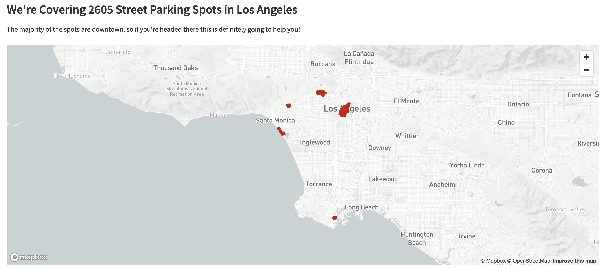
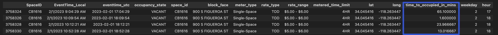
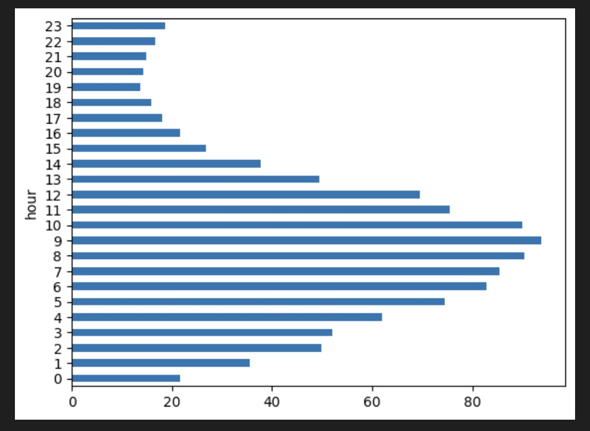

Your Solution To Street Parking in Los Angeles
Feb 11, 2024
Story
Parking in LA is a real problem. If you're around the Korea Town/Silverlake area like me, you've most likely experienced some difficulties with parking. In my case, it's even more challenging as I don't have a designated parking spot in my apartment building so even at night after a long day, I need to look for a street parking spot. It took me just a couple hours in LA to realize that parking was going to cause me a lot of headaches and that I needed to look for a solution.
Solution
So how can I solve this problem and make my life, and maybe others, easier in LA? I decided to build a tool to help me find available spots in real time and use analytics to optimize the routes I take anywhere so I spend less time looking for parking.
Turns out that the LA City government have a free API that gives access to the Parking Meter locations and occupancy updated with high frequency in the LA City.
So I leveraged that data to find the current occupancy (VACANT or OCCUPIED) of each of the 2807 parking meters that they provide data for.
So how to use the app? Once you go to the website, you'll find two dropdowns to learn more about the purpose of the app as well as some indications on how to use it. Then you'll see three main text inputs
- From: your origin
- To: your destination
- Distance: number of blocks away you're willing to park from your destination
You are going to have two maps right below your input widgets: On your left you'll see all the metered street parking spots that we have data for, and on the right you'll see the available parking spots that are within your specified radius of your destination as well as the distance and time to get to your destination.
Now the question is, how do I optimize your route so you spend less time looking for parking? Let's say you want to go to the Crypto.com arena, and the app is showing you 12 available spots in your acceptable proximity. How do you know which one you go to?
Route Optimization
I used some of the vast amount of historical parking data that LA City has archived to train a Machine Learning model that predicts the time a spot will remain vacant. In the below snippet, the time_to_occupied_in_mins is the variable of interest (I know I need to work on my variable naming lol)
So with a good model, the idea is to optimize your route in a way that you're headed to the Street Parking Spot that is more likely to still be vacant by the time you arrive there. This solution will save you a couple of minutes, and more importantly, you won't have to drive around looking for parking! The natural next question is, what happens if I get there and the spot is taken? Easy! Open the app and refresh your search, since we're using live data it will give you the spots that are available at the moment!
Some interesting findings from my EDA
This is the average time the Street Parking Spots remain vacant grouped by hour. The y-axis is the hours of the day and the x-axis is average time in minutes. So, the spots that are vacant from 8:00 AM until 12:00 PM on average remain vacant for a longer time, which probably makes sense because people are working or commuting less during those times...
Work in Progress
This project is work in progress. I'm still working on the model and the app deployment, but it's getting deployed soon! Stay Tuned!!
In the meantime, please check out the Streamlit's App Source Code
Tech Stack
APIs:
- Bing Maps API
- OpenWeatherMap API
- LADOT Parking Meter Occupancy API
DevOps
- Github
- Git
- Docker
Databases
- Sqlite3
App
- Streamlit
- App Source Code
ML model
- Scikit-Learn
- Pandas
- NumPy